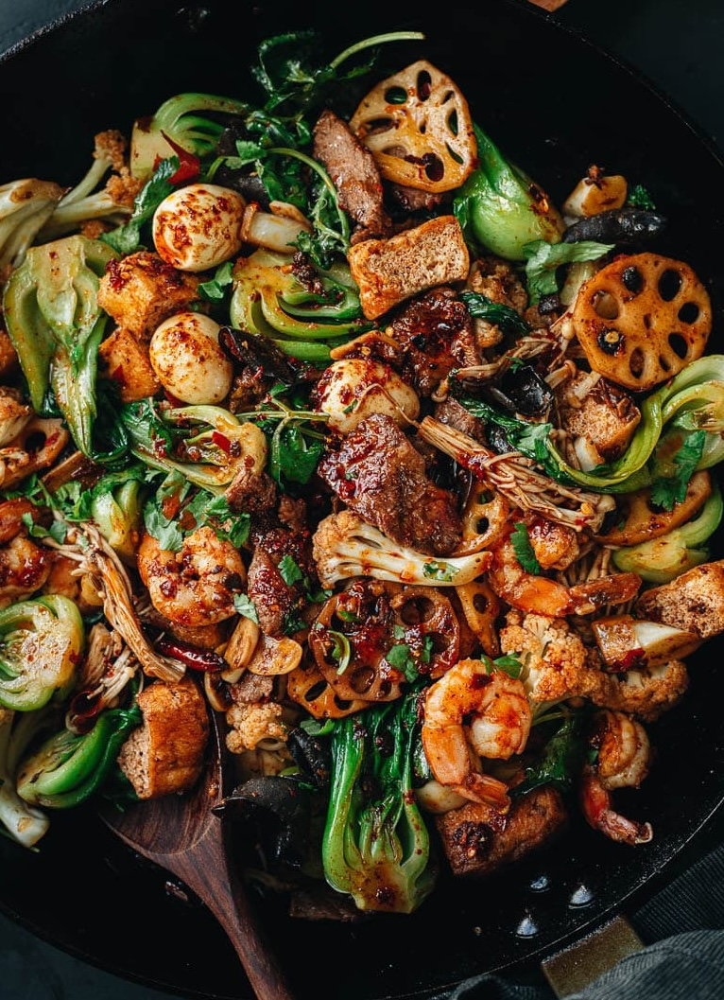

Hotpot

Description
Hotpot (or Ma La Xiang Guo) can be directly translated as “numbing spicy fragrant pot” and it’s often called spicy numbing stir fry pot or mala dry pot in the US.
The dish features a medley of vegetables, tofu, meat, and seafood stir fried in a very rich and savory spicy sauce. It is often served in a giant bowl and shared family style over steamed rice.
Ingredients
- 1/2 packet spicy Sichuan hot pot base
- 1 tablespoon doubanjiang
- 1 tablespoon black bean sauce
- 2 cups Chinese cauliflower
- 1/2 cup lotus root
- 6 heads baby bok choy
- 1 cup enoki mushrooms
- 1/8 cup dried wood ear mushrooms
- 1/2 cup fried tofu
- 4 oz strip or ribeye steak
- 4 oz shrimp
- 1/2 cup quail eggs
- 2 tablespoons peanut oil
- 4 cloves garlic
- 1 tablespoon ginger
- 6 whole dried chili peppers
- 1 cup cilantro
Steps
- Prepare ingredients that need rehydrating: To rehydrate the wood ear mushrooms, add the dried mushrooms to a medium sized bowl and cover with 1 cup hot water. Soak for 15 to 20 minutes, or until the mushrooms are tender throughout. Drain, remove tough ends if needed, and cut into bite-sized pieces.
- For the sauce: Combine the sauce ingredients and set aside.
- To prepare the dry pot ingredients: Bring a pot of water to a boil for blanching non-meat ingredients. Set up a large strainer over a bowl. Blanch the ingredients in groups by timing or one ingredient at a time. Once done, transfer the blanched ingredients from the water and place in the strainer. First blanch the lotus root and cauliflower for 2 to 3 minutes, until al dente. Then blanch the bok choy, enoki mushrooms and wood ear mushrooms for 30 seconds to 1 minute, until just starting to turn soft.
- To cook the mala dry pot: Heat 1 tablespoon of the oil in a large skillet over medium heat. Spread the thinly sliced steak without overlapping. Cook for 30 seconds or until the bottom turns light golden. Flip and sear on the other side until just cooked through and the inside of the meat is still slightly pink. Transfer the meat to a plate.
- Add the shrimp to the pan. Cook for 1 to 2 minutes, until the surface turns pink-ish white. Flip and cook on the other side for another 1 to 2 minutes until the shrimp has fully curled up. Transfer to a plate with the steak.
- Add the remaining 1 tablespoon oil to the pan and the garlic, ginger, and chili peppers. Fry until fragrant, about 30 seconds.
- Pour in the sauce. Cook for another 30 seconds, or until the hot pot base is fully melted.
- Add the blanched ingredients. Toss a few times to coat well. Add the stir fried steak and shrimp. Toss until everything is evenly coated. Add the cilantro and give it one more toss. Immediately transfer everything to a large bowl or plate.
- Serve hot family-style as a main dish with steamed rice.